library(tidyverse)
library(nimble)
library(coda)
library(MCMCvis)
library(bayesplot)
library(ggdist)
library(tidybayes)From FANGS to Nimble: a hierarchical GLM of coral cover
Branching coral, logging and random effects, coded by hand in R
Where we are
This morning you fit Bayesian models in the FANGS app. This afternoon we fit the same kind of model by writing the code ourselves in R with Nimble. We build up to the summative challenge in small steps:
- Read the data and look at coral cover.
- Fit a binomial GLM to site totals.
- Add site random effects and fit the full transect data.
- Fix poor mixing with a block sampler.
- Check the model and make publication-quality plots.
- Add an observation-level random effect to deal with overdispersion.
The scenario. In Kia Province, Solomon Islands, divers ran five transects on each of 49 reefs. Along each transect they dropped about 75 points and recorded what was under each one. We count the points that landed on branching coral, the structurally complex habitat that shelters juvenile fish. Logging washes sediment onto reefs and smothers it, so we expect less branching coral on logged reefs.
Our question is simple: is there less branching coral on reefs in logged areas?
Data. Hamilton, R.J., Almany, G.R., Brown, C.J., Pita, J., Peterson, N.A. & Choat, J.H. (2017) Logging degrades nursery habitat for an iconic coral reef fish. Biological Conservation 210: 273–280. https://doi.org/10.1016/j.biocon.2017.04.025. Lightly modified for teaching.
Bayesian software options for R users
FANGS is for learning. For research you will want one of the established engines. The choice is mostly a trade-off between how much code you write and how much control you get.
| Package | Computational speed | Code complexity | Flexibility | Installation requirements | Use in ecology |
|---|---|---|---|---|---|
Stan (rstan, cmdstanr) |
Fast for continuous parameters; gradient-based HMC/NUTS scales well to many parameters | High — you write the full model in Stan’s own C++-like language, with declared blocks and types | Very high, but no discrete parameters (they must be marginalised out) | Needs a working C++ toolchain; models compile before running (slow first run) | Widespread, and the standard in the quantitative ecology literature |
| brms | Same engine as Stan, so same sampling speed, plus compile time per model | Low — one-line lmer-style formulas, e.g. cover | trials(n_points) ~ logged + (1 \| site) |
Moderate-high: huge range of built-in families and terms, but hard to go outside them | As Stan (it generates and compiles Stan code for you) | Very widespread; now the default first choice for most applied ecologists |
| INLA | Very fast — approximates the posterior instead of sampling, often seconds where MCMC takes minutes | Low-moderate — formula interface, but priors and spatial terms use their own idiom | Restricted to latent Gaussian models (covers GLMMs, spatial and temporal models) | Not on CRAN; installed from the R-INLA repository with bundled binaries | Common in spatial ecology and species distribution modelling; less so elsewhere |
JAGS (rjags, R2jags) |
Slowest of these for large or hierarchical models; Gibbs/slice sampling, pure interpreter | Moderate — BUGS language, close to how you’d write the model on paper (this is FANGS’ syntax) | High; handles discrete parameters, which Stan cannot | Needs the JAGS program installed separately from R, then the R package | Historically the workhorse and still very common in older papers and textbooks |
| Nimble | Faster than JAGS — compiles models to C++; usually slower than Stan for big continuous models | Moderate — BUGS language like JAGS, plus some R boilerplate to build and compile the model | Highest — you can write your own distributions and samplers in R-like code | CRAN package, but needs a C++ toolchain to compile models | Growing steadily, especially in population ecology and capture-recapture work |
A rough rule: use brms for anything that fits a standard formula, INLA when you have spatial data and need speed, and Nimble or Stan when the model is unusual enough that you need to write it out yourself. We use Nimble this afternoon because its model code is the same BUGS language you already used in FANGS, so the step up from the app is a short one. Its also easy to install from CRAN.
Setup
We’ll style every plot on a theme_classic() base.
# colour theme for plots -- matches the FANGS app
fangs <- c(
bg = "#1e1f29", # page background
panel = "#21222c", # panel background
dark = "#282a36", # Dracula background
border = "#44475a", # gridlines, borders
muted = "#6272a4", # de-emphasised text
text = "#f8f8f2", # foreground text
accent = "#bd93f9", # purple -- primary accent
cyan = "#8be9fd", # secondary accent
green = "#50fa7b",
orange = "#ffb86c", # reference lines
red = "#ff5555"
)
theme_set(theme_classic(base_size = 16))
bayesplot_theme_set(theme_classic(base_size = 16))
color_scheme_set(c(fangs[["border"]], fangs[["muted"]], fangs[["accent"]],
fangs[["cyan"]], fangs[["green"]], fangs[["bg"]]))1. Read and explore the data
We read the data straight from the course website.
url <- "https://www.seascapemodels.org/FANGS/course/data/random-effects-full.csv"
dat <- read_csv(url)
glimpse(dat)Rows: 245
Columns: 8
$ site <dbl> 1, 1, 1, 1, 1, 2, 2, 2, 2, 2, 3, 3, 3, 3, 3, 4, 4, …
$ flow <chr> "Strong", "Strong", "Strong", "Strong", "Strong", "…
$ logged <chr> "Not logged", "Not logged", "Not logged", "Not logg…
$ dist_to_logging_km <dbl> 3.3968083, 3.3968083, 3.3968083, 3.3968083, 3.39680…
$ trans <dbl> 1, 2, 3, 4, 5, 1, 2, 3, 4, 5, 1, 2, 3, 4, 5, 1, 2, …
$ cover <dbl> 4, 1, 0, 2, 7, 14, 5, 4, 4, 6, 33, 23, 45, 64, 41, …
$ cover_branching <dbl> 6, 1, 1, 4, 11, 37, 30, 31, 28, 48, 38, 34, 56, 65,…
$ n_points <dbl> 75, 75, 75, 75, 75, 75, 75, 75, 75, 75, 75, 75, 75,…Each row is one transect. There are 49 sites and 5 transects per site, so 245 rows.
The columns we need:
| Column | Meaning |
|---|---|
site |
reef identifier, 1–49 |
trans |
transect number within the reef, 1–5 |
cover_branching |
points that landed on branching coral |
n_points |
total points dropped on that transect (72–75) |
logged |
whether the reef is in a logged area |
Note
There is also a cover column, which counts branching Acropora only. It is 42% zeros and shows no clear logging effect, so we use cover_branching — all branching coral — which is only 12% zeros and tells a much clearer story. Picking a response that actually varies is part of the analysis, not a shortcut.
Why a binomial?
Each transect is a set of points, and each point either landed on branching coral or it didn’t. That is exactly a binomial: n_points trials, each with some probability of success.
dat |>
group_by(logged) |>
summarise(n_transects = n(),
mean_points = mean(cover_branching),
mean_cover = 100 * mean(cover_branching / n_points))# A tibble: 2 × 4
logged n_transects mean_points mean_cover
<chr> <int> <dbl> <dbl>
1 Logged 105 12.7 16.9
2 Not logged 140 25.4 33.8ggplot(dat, aes(x = 100 * cover_branching / n_points, fill = logged)) +
geom_histogram(binwidth = 5, position = "identity", alpha = 0.6) +
scale_fill_manual(values = c(fangs[["orange"]], fangs[["cyan"]])) +
labs(x = "Branching coral cover (%)", y = "Number of transects",
fill = NULL)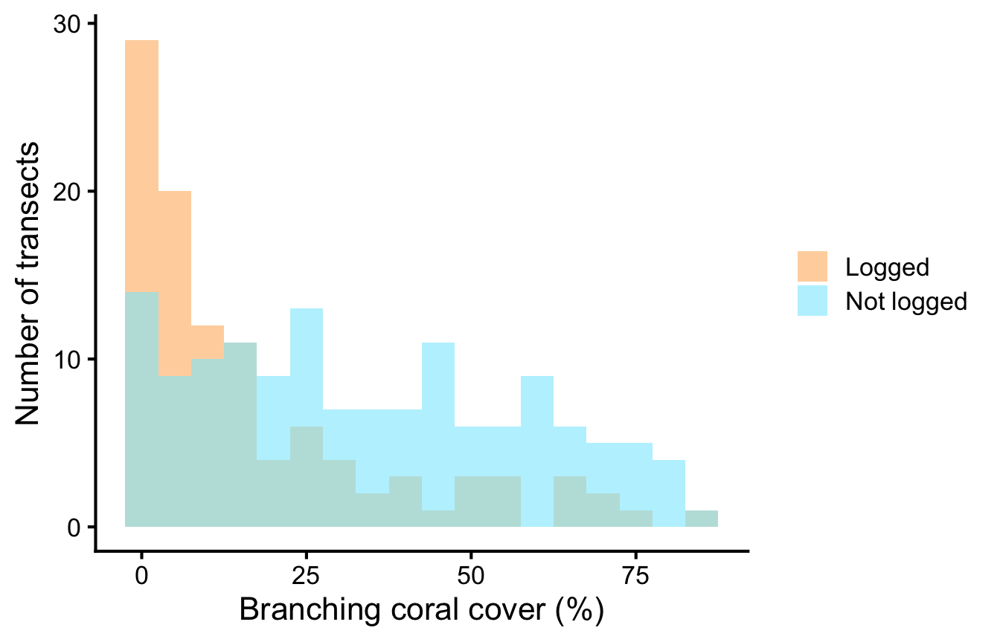
Unlogged reefs average about 34% cover and logged reefs about 17% — roughly a twofold difference. That is the signal we want the model to recover, with honest uncertainty attached.
NoteBinomial or Poisson?
A Poisson would also run, and for small counts the two are close. But the binomial is the right model here: it knows cover can’t exceed n_points, and it handles the two transects with 72 points instead of 75 without any extra work. Use the likelihood that matches how the data were generated.
Site totals
For our first model we ignore the transects and work with one value per site: total points on branching coral, out of total points sampled.
site_dat <- dat |>
group_by(site, logged) |>
summarise(cover = sum(cover_branching),
npts = sum(n_points),
.groups = "drop") |>
mutate(logged01 = as.integer(logged == "Logged"))
site_dat# A tibble: 49 × 5
site logged cover npts logged01
<dbl> <chr> <dbl> <dbl> <int>
1 1 Not logged 23 375 0
2 2 Logged 174 375 1
3 3 Logged 242 375 1
4 4 Logged 48 375 1
5 5 Logged 5 375 1
6 6 Logged 207 375 1
7 7 Logged 49 375 1
8 8 Logged 3 375 1
9 9 Logged 69 375 1
10 10 Logged 105 375 1
# ℹ 39 more rows2. A binomial GLM on site totals
The model
We keep this first model as simple as possible: an intercept and a single contrast for logging. It is the same structure you would write as a one-predictor model in R, but with a logit link and a binomial likelihood.
glm_code <- nimbleCode({
beta0 ~ dnorm(0, sd = 2) # intercept: logit cover on an unlogged reef
beta1 ~ dnorm(0, sd = 1) # logging contrast
for (i in 1:N) {
logit(p[i]) <- beta0 + beta1 * logged[i]
cover[i] ~ dbin(p[i], npts[i])
y_rep[i] ~ dbin(p[i], npts[i]) # replicate data for the posterior predictive check
}
})The equivalent glm would look like:
glm(cbind(cover, npts - cover) ~ logged01,
data = site_dat, family = binomial)Step by step:
nimbleCode()holds the model description. It looks like R, but Nimble reads it as a model definition, much like the model text in FANGS.- The two priors are the regression coefficients. The
~means “is distributed as”. - The loop runs over the 49 sites. The
<-is a fixed calculation, not a random draw. logit(p[i])is the logit link. It maps the linear predictor onto a probability between 0 and 1, sopcan never stray outside the range a proportion is allowed to take.cover[i] ~ dbin(p[i], npts[i])says the points landing on branching coral follow a binomial with probabilityp[i]out ofnpts[i]trials. Note the argument order: BUGS and Nimble put the probability first, then the size. This catches people out because R’s ownrbinom()takes them the other way round.y_rep[i]has the same distribution ascover[i], but we don’t give it any data. On each iteration Nimble simulates it, using that iteration’sp[i]. This gives draws from the posterior predictive distribution, which we use for the posterior predictive check. It’s the same as the “generated quantities” idea you may have seen in Stan.
NoteReading the coefficients
Both coefficients live on the logit scale, so neither is directly a per cent:
| Coefficient | Meaning |
|---|---|
beta0 |
logit of cover on an unlogged reef |
beta1 |
change in logit cover on a logged reef |
Two back-transformations make them readable. plogis(beta0) is the cover on an unlogged reef as a proportion, and plogis(beta0 + beta1) is the cover on a logged reef. exp(beta1) is the odds ratio: how the odds of a point landing on branching coral change with logging. A beta1 below zero means less coral on logged reefs, which is what we expect if sediment impacts coral reefs.
WarningA note on
dnorm in Nimble
In FANGS, dnorm(0, 2) means a normal distribution with mean 0 and standard deviation 2. Nimble follows the older BUGS convention, where the second number is the precision, which is 1 / variance. So dnorm(0, 2) in Nimble means an SD of about 0.71, a much tighter prior than you intended.
Always name the argument: dnorm(0, sd = 2). Then your priors mean the same thing they meant in FANGS this morning.
1 / sqrt(2) # the SD you would get from dnorm(0, 2) in Nimble[1] 0.7071068Data and constants
Nimble separates data, which are things the model has a likelihood for, from constants, which are fixed inputs such as indices, sample sizes and covariates.
Our predictor is already a 0/1 indicator, so there is nothing to standardise. That is one quiet advantage of a categorical predictor: beta1 is the whole difference between the two groups, and the priors mean what you think they mean without any rescaling.
consts <- list(
N = nrow(site_dat),
logged = site_dat$logged01,
npts = site_dat$npts
)
data <- list(cover = site_dat$cover)Here N, logged and npts are constants, and the observed site totals are the only data node. The binomial size belongs in constants, not data: it is something we know, not something the model has a likelihood for.
Prior predictive check
The model block is a recipe for generating data. If we run it forwards with no data, Nimble draws the parameters from their priors, then calculates p, then simulates cover. That’s the prior predictive distribution.
# A copy of the model with no data, so Nimble can simulate every node
prior_model <- nimbleModel(glm_code, constants = consts)
c_prior <- compileNimble(prior_model)
# 1000 simulated data sets: one row per draw, one column per site
sim_cover <- t(replicate(1000, {
c_prior$simulate() # draw the betas from the priors, then p, then cover
c_prior$cover
}))
# Express as per cent cover so it's on a scale we can judge
sim_pct <- 100 * sweep(sim_cover, 2, consts$npts, "/")
summary(as.vector(sim_pct)) Min. 1st Qu. Median Mean 3rd Qu. Max.
0.00 21.33 52.80 51.68 82.93 100.00 tibble(pct = as.vector(sim_pct)) |>
ggplot(aes(x = pct)) +
geom_histogram(bins = 40, fill = fangs[["cyan"]]) +
labs(x = "Simulated site cover (%)", y = "Count")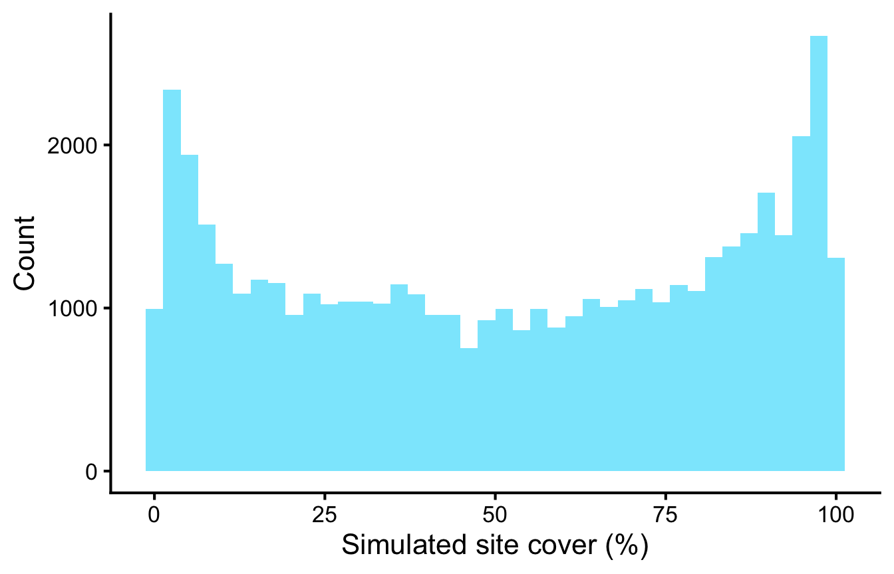
A few things to note about the code:
- We build a separate model object without data.
simulate()skips data nodes by default, so on a model with data,coverwould never change. A copy with no data also leaves the model we fit later untouched. c_prior$simulate()andc_prior$coveruse$to call a method and read a value from the model object. This is how you work with Nimble models from R.t()transposes the result.replicate()returns one column per draw, and we want one row per draw, the same layout asy_replater.
The logit link ensures simulated cover is always between 0 and 100%. What we are judging is whether the spread is reasonable. A dnorm(0, sd = 2) prior on the logit scale spans roughly 2% to 98% cover, which is wide but not absurd for a reef.
TipExtension
Re-run the prior predictive check with beta0 ~ dnorm(0, sd = 10). You’ll see the draws pile up at 0% and 100% with almost nothing in between. A prior that looks “uninformative” on the logit scale is in fact strongly informative, and it says that reefs are either bare or carpeted.
Fitting the model
Fitting in Nimble takes a few more steps than pressing Run in FANGS, because Nimble compiles the model and the sampler to C++.
# Build and compile the model
glm_model <- nimbleModel(glm_code, constants = consts, data = data,
inits = list(beta0 = 0, beta1 = 0))
c_model <- compileNimble(glm_model)
# Set up, build and compile the sampler
mcmc_conf <- configureMCMC(glm_model,
monitors = c("beta0", "beta1", "y_rep"))===== Monitors =====
thin = 1: beta0, beta1, y_rep
===== Samplers =====
RW sampler (2)
- beta0
- beta1
posterior_predictive sampler (49)
- y_rep[] (49 elements)glm_mcmc <- buildMCMC(mcmc_conf)
c_mcmc <- compileNimble(glm_mcmc, project = glm_model)
# Run: 4 chains, 2000 burn-in, 4000 kept samples per chain
samples <- runMCMC(c_mcmc,
nchains = 4,
niter = 6000,
nburnin = 2000,
samplesAsCodaMCMC = TRUE)|-------------|-------------|-------------|-------------|
|-------------------------------------------------------||-------------|-------------|-------------|-------------|
|-------------------------------------------------------||-------------|-------------|-------------|-------------|
|-------------------------------------------------------||-------------|-------------|-------------|-------------|
|-------------------------------------------------------|
Note
In Nimble, niter includes the burn-in. To keep 4000 samples after a 2000-iteration burn-in, set niter = 6000.
nimbleMCMC() wraps all of these steps into one call. It’s handy once you know what each step does.
NotePredictions inside the model
Print mcmc_conf and you’ll see that Nimble has given the y_rep nodes posterior_predictive samplers. These simply simulate new values each iteration and don’t change the parameter estimates. Two trade-offs:
- Every monitored prediction adds a column to the output. Use
paramsorparsin summaries and plots so they only show the parameters you want. - To change what you predict, for example a new prediction grid, you need to rebuild and recompile the model.
- If you want you can assemble predictions after the model fitting by just taking samples and applying the model formula to those. This gives more flexibility but increases the risk of mistakes if you change the model definition but then forget to change the prediction calculation.
Summary, R-hat and ESS
MCMCsummary(samples, params = c("beta0", "beta1"), round = 2) mean sd 2.5% 50% 97.5% Rhat n.eff
beta0 -0.67 0.02 -0.71 -0.67 -0.63 1 1735
beta1 -0.92 0.04 -0.99 -0.92 -0.85 1 2033There is one row per parameter, with the posterior mean, SD and quantiles, then Rhat and n.eff (the effective sample size). We want R-hat at about 1.00 and n.eff in the hundreds or more.
Trace plots
mcmc_trace(samples, pars = c("beta0", "beta1"))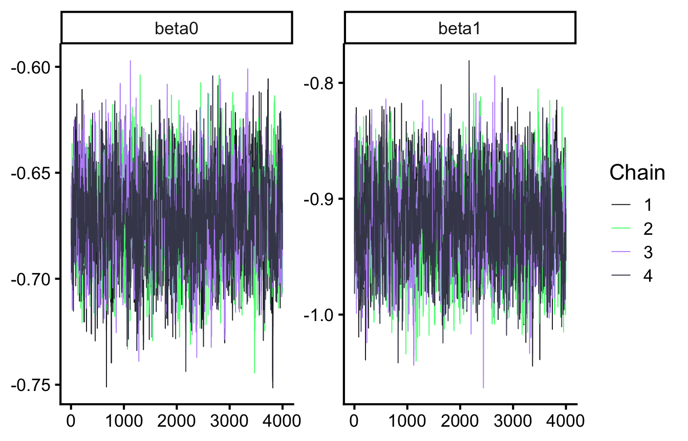
mcmc_dens_overlay(samples, pars = c("beta0", "beta1"))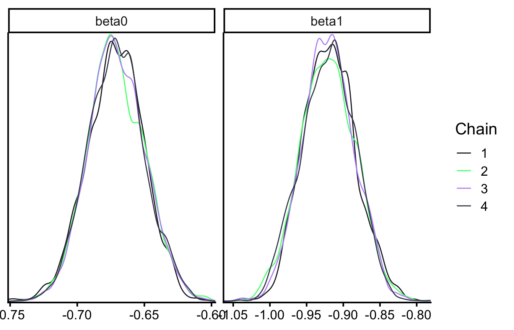
Each parameter gets a panel with the four chains in different colours. If the chains have mixed well, the four density curves sit almost on top of each other.
Posterior predictive check
The ppc_ functions in bayesplot are the posterior predictive plots the brms community use. They need the observed data and a matrix of simulated data sets, with one row per posterior draw. Nimble has already simulated these as y_rep, so we just pull out those columns.
# Stack all chains into one matrix of draws
post <- as.matrix(samples)
# One row per draw, one column per site, in site order
y_rep <- post[, paste0("y_rep[", 1:consts$N, "]")]
ppc_dens_overlay(site_dat$cover, y_rep[1:100, ])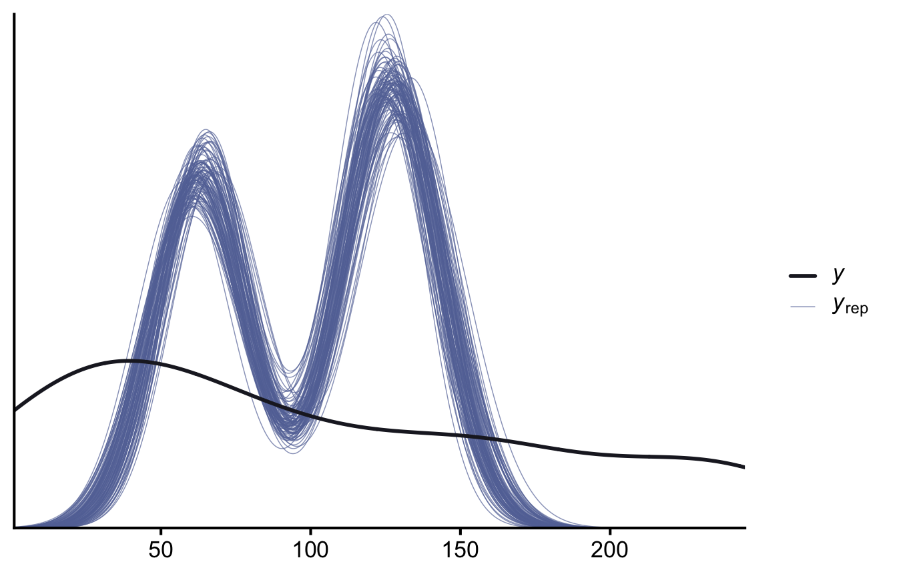
ppc_intervals(site_dat$cover, y_rep) +
labs(x = "Site", y = "Points on branching coral")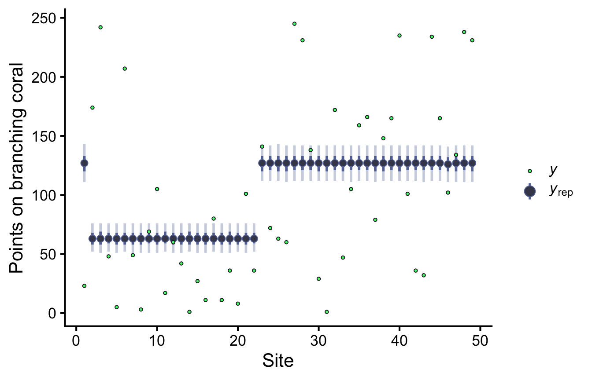
The fit is poor, and in an informative way. The observed site totals range from near zero to over 200 within the same logging category. The observed points fall far outside their predictive intervals.
This is overdispersion. Reefs differ for many reasons that logging alone doesn’t capture: depth, exposure, history, luck. The binomial has no parameter for that. That is what random effects are for.
3. Adding site random effects
Now we use the full transect data. Each site gets its own random intercept, and a hyperparameter controls how far apart those intercepts can spread.
re_code <- nimbleCode({
# Fixed effects
beta0 ~ dnorm(0, sd = 2) # intercept: logit cover on an unlogged reef
beta1 ~ dnorm(0, sd = 1) # logging contrast
# Hyperparameter: SD of site effects
sigma_b ~ dexp(1.54)
# Site random effects
for (s in 1:Nsite) {
b[s] ~ dnorm(0, sd = sigma_b)
}
# Likelihood, one row per transect
for (i in 1:N) {
logit(p[i]) <- beta0 + beta1 * logged[i] + b[site[i]]
cover[i] ~ dbin(p[i], npts[i])
}
})
re_consts <- list(
N = nrow(dat),
Nsite = n_distinct(dat$site),
site = as.integer(factor(dat$site)),
logged = as.integer(dat$logged == "Logged"),
npts = dat$n_points
)
re_data <- list(cover = dat$cover_branching)What is new compared with the GLM:
- The site effects
b[s]. There is one per site, all drawn from a normal distribution centred on zero. The mean is zero becausebeta0already holds the average. Ifbhad its own mean as well, the model couldn’t tell that mean apart frombeta0. That’s the over-specification issue covered in Module 20 of the FANGS course. - The hyperparameter
sigma_b. This is the SD of the site effects: how different the reefs are from each other. It is estimated from the data, which is what makes the model hierarchical. Sites borrow strength from one another, and whensigma_bis small, each site’s mean is shrunk more strongly towards the average. - The prior on
sigma_b. It must be positive, so we use an exponential prior. This puts the most weight near zero, so unless the data say otherwise, it pulls the model towards “the reefs aren’t very different”. See the aside below for how we chose the rate of 1.54. - Avoid vague priors on SDs. A very wide prior such as
dunif(0, 100)will allows reefs to differ by absurd factors. You may see such priors in older literature (gamma(0.001, 0.001)on the precision was also a common vague prior that is now widely regarded as problematic). The data can’t rule those values out, and the variance parameter mixes badly. - The
site[i]indexing is how each transect picks out the effect of its own reef. Writing 49 dummy variables by hand would be tedious, which is why random effects use indexing instead. loggedis a site-level predictor repeated across transects. All five transects on a reef share the same value. The random effect and the fixed effect are therefore working at the same level, which is why the two can trade off against each other. We’ll need to look carefully at the diagnostics for problems.
NoteAside: choosing the rate of an exponential prior
Following McElreath (Statistical Rethinking, 2nd edition, 2020), we use an exponential prior for the site SD. To pick its rate, work backwards from something you can picture.
- Choose a multiple. How different could a typical reef be from the average reef? Say that a reef whose odds of branching coral are about 7 times higher (or lower) than average would be surprising.
- Choose a probability. Allow only a 5% chance that reef differences are bigger than that.
- Convert the multiple to the logit scale. The model works on log-odds, so an odds multiple of 7 is an SD of \(\log(7) \approx 1.95\).
- Solve for the rate. For an exponential distribution, \(P(\sigma_b > s) = e^{-\lambda s}\). Setting that equal to 0.05 gives
\[\lambda = \frac{-\log(0.05)}{\log(7)}\]
multiple <- 7 # reef-to-reef odds multiple we'd find surprising
p_exceed <- 0.05 # probability the SD is larger than that
s_max <- log(multiple)
rate <- -log(p_exceed) / s_max
rate[1] 1.539502# Check it worked should = p_exceed
1 - pexp(s_max, rate)[1] 0.05That gives a rate of about 1.54, so the model line is sigma_b ~ dexp(1.54).
Try other numbers. If you think a multiple of 20 is plausible, the rate drops to 1. A larger rate pulls harder towards zero.
Prior predictive check
The same three lines work for the hierarchical model. We just swap in the new code and constants. simulate() now also draws sigma_b, then a site effect for each reef, before simulating cover for every transect.
re_prior <- nimbleModel(re_code, constants = re_consts)
c_re_prior <- compileNimble(re_prior)
re_sim_cover <- t(replicate(1000, {
c_re_prior$simulate()
c_re_prior$cover
}))
re_sim_pct <- 100 * sweep(re_sim_cover, 2, re_consts$npts, "/")
summary(as.vector(re_sim_pct)) Min. 1st Qu. Median Mean 3rd Qu. Max.
0.00 17.33 49.33 49.95 82.67 100.00 tibble(pct = as.vector(re_sim_pct)) |>
ggplot(aes(x = pct)) +
geom_histogram(bins = 40, fill = fangs[["cyan"]]) +
labs(x = "Simulated transect cover (%)", y = "Count")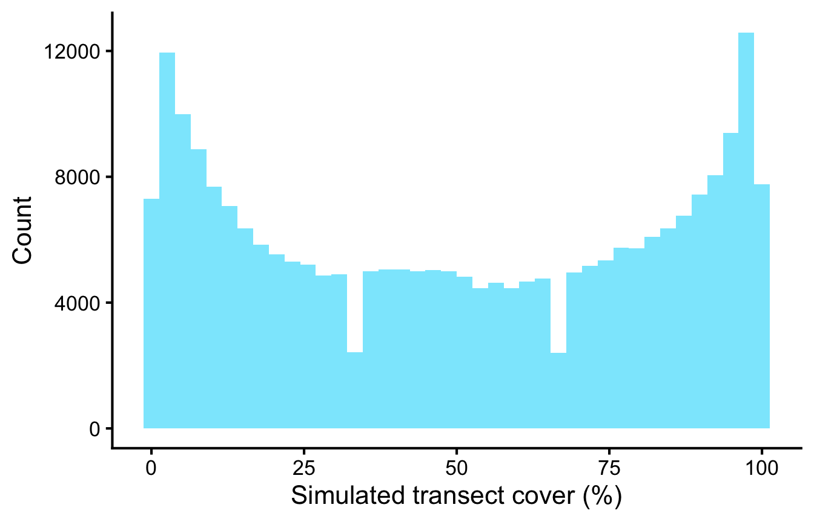
The site effects add an extra layer of variation, so the distribution is more spread out than for the GLM, with more weight near 0% and 100%. That is what we want: the prior should allow reefs that are nearly bare and reefs that are thick with coral, because both exist in the data.
Watch for the distribution becoming U-shaped, with everything piled against 0 and 100 and nothing in the middle. That means sigma_b’s prior is too loose and the model believes reefs are all-or-nothing before seeing any data. If that happens, go back to the aside and choose a smaller reef-to-reef multiple.
You can see this if you re-run the above prior check with sigma_b = 0.43, which is like saying the typical difference in the odds of cover among reefs is 1000x.
Fitting the centred model
The steps are the same as for the GLM. We add sigma_b and b to the inits and monitors.
re_model <- nimbleModel(re_code, constants = re_consts, data = re_data,
inits = list(beta0 = 0, beta1 = 0,
sigma_b = 1, b = rep(0, re_consts$Nsite)))
c_re_model <- compileNimble(re_model)
re_conf <- configureMCMC(re_model,
monitors = c("beta0", "beta1", "sigma_b", "b"))===== Monitors =====
thin = 1: b, beta0, beta1, sigma_b
===== Samplers =====
RW sampler (52)
- beta0
- beta1
- sigma_b
- b[] (49 elements)re_mcmc <- buildMCMC(re_conf)
c_re_mcmc <- compileNimble(re_mcmc, project = re_model)
re_samples <- runMCMC(c_re_mcmc, nchains = 4, niter = 10000, nburnin = 4000,
thin = 5, samplesAsCodaMCMC = TRUE)|-------------|-------------|-------------|-------------|
|-------------------------------------------------------||-------------|-------------|-------------|-------------|
|-------------------------------------------------------||-------------|-------------|-------------|-------------|
|-------------------------------------------------------||-------------|-------------|-------------|-------------|
|-------------------------------------------------------|Checks
MCMCsummary(re_samples, params = c("beta0", "beta1", "sigma_b"), round = 2) mean sd 2.5% 50% 97.5% Rhat n.eff
beta0 -0.88 0.20 -1.25 -0.89 -0.46 1.11 30
beta1 -1.27 0.39 -1.97 -1.31 -0.41 1.28 37
sigma_b 1.40 0.15 1.14 1.39 1.73 1.00 2812mcmc_trace(re_samples, pars = c("sigma_b", "beta0", "beta1"))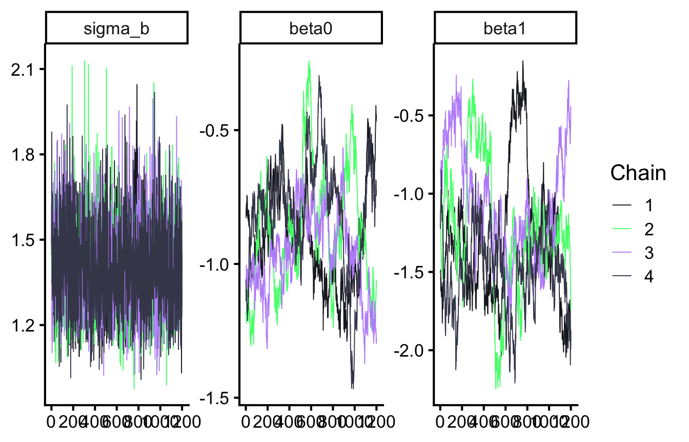
# Where the trouble is: the intercept against the logging contrast
mcmc_scatter(re_samples, pars = c("beta0", "beta1"))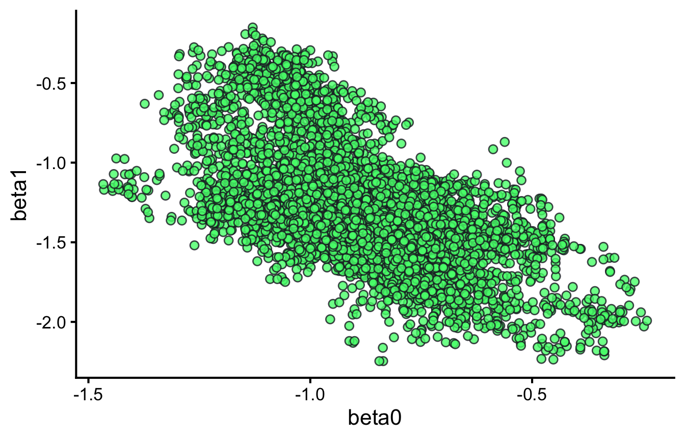
What to look for:
sigma_bis fine. Its R-hat sits at 1.00 with an n.eff in the thousands. The hierarchical variance is not the problem in this model.beta0is not. Expect R-hat > 1.1 and n.eff of about 25 — out of 4800 saved draws. The traces wander rather than looking like white noise.- The scatter plot shows why.
beta0andbeta1are strongly negatively correlated.beta0sets the level for unlogged reefs andbeta1is the step down to logged reefs, so the sampler can raise one and lower the other and barely change the likelihood. It ends up crawling along a diagonal ridge.
Nimble’s default is a separate random-walk sampler for each parameter, and a one-at-a-time sampler cannot move along a diagonal. At every step it tries to go off the ridge and gets rejected.
NoteFunnels and random effects
Sometimes in hierarchical models we see a funnel in the samples between sigma_b and the site effects. Try this:
mcmc_scatter(re_samples, pars = c("b[1]", "sigma_b"),
transformations = list(sigma_b = "log"))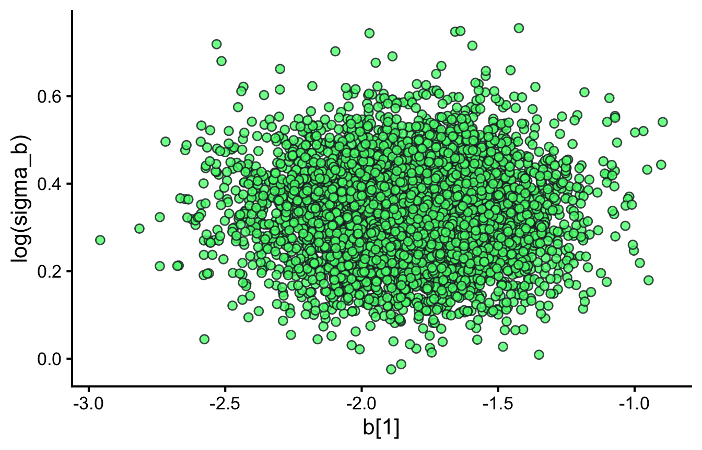
There isn’t much of one here. Each site has five transects and about 375 points, so every site effect is well identified by its own data and never gets squeezed into the neck. Funnels happen when groups are small or numerous relative to the information in them.
If your are building your own model and you notice a funnel in your diagnostics, then the non-centereed parameterization is the trick to try (see module 20 of the FANGS course.)
4. Fixing the sampler with a block update
The problem is correlation between two fixed effects, so the fix is to sample them together. We replace their individual samplers with a single automated-factor slice sampler, which finds the correlated directions and moves along them.
re_nc_code <- nimbleCode({
beta0 ~ dnorm(0, sd = 2)
beta1 ~ dnorm(0, sd = 1)
sigma_b ~ dexp(1.54)
for (s in 1:Nsite) {
b[s] ~ dnorm(0, sd = sigma_b)
}
for (i in 1:N) {
logit(p[i]) <- beta0 + beta1 * logged[i] + b[site[i]]
cover[i] ~ dbin(p[i], npts[i])
y_rep[i] ~ dbin(p[i], npts[i]) # replicate data for the PPC
}
# --- Generated quantities -------------------------------------------
p_unlogged <- ilogit(beta0) # cover on a typical unlogged reef
p_logged <- ilogit(beta0 + beta1) # cover on a typical logged reef
odds_ratio <- exp(beta1) # effect of logging on the odds
pct_change <- 100 * (p_logged / p_unlogged - 1) # % change in cover
})The model block is unchanged apart from the generated quantities, which we will use to plot predictions. But we will change how we sample from the model:
re_nc_model <- nimbleModel(re_nc_code, constants = re_consts, data = re_data,
inits = list(beta0 = 0, beta1 = 0,
sigma_b = 1, b = rep(0, re_consts$Nsite)))
c_re_nc_model <- compileNimble(re_nc_model)
re_nc_conf <- configureMCMC(re_nc_model,
monitors = c("beta0", "beta1", "sigma_b", "b",
"y_rep", "p_unlogged", "p_logged",
"odds_ratio", "pct_change"),
print = FALSE)
# Replace the two separate random-walk samplers with one block sampler
re_nc_conf$removeSamplers(c("beta0", "beta1"))
re_nc_conf$addSampler(target = c("beta0", "beta1"), type = "AF_slice")
# Confirm the swap: the AF_slice sampler is now the last one in the list
tail(re_nc_conf$getSamplers(), 1)[[1]]
AF_slice sampler: beta0, beta1re_nc_mcmc <- buildMCMC(re_nc_conf)
c_re_nc_mcmc <- compileNimble(re_nc_mcmc, project = re_nc_model)
re_nc_samples <- runMCMC(c_re_nc_mcmc, nchains = 4, niter = 30000,
nburnin = 10000, thin = 10,
samplesAsCodaMCMC = TRUE)|-------------|-------------|-------------|-------------|
|-------------------------------------------------------||-------------|-------------|-------------|-------------|
|-------------------------------------------------------||-------------|-------------|-------------|-------------|
|-------------------------------------------------------||-------------|-------------|-------------|-------------|
|-------------------------------------------------------|Three things to note:
removeSamplers()thenaddSampler()is the Nimble syntax for changing how a parameter is updated. Being able to do this easily is one of Nimble’s main advantages over JAGS.AF_sliceis an automated-factor slice sampler. It learns the correlation structure and slices along the rotated axes, so the diagonal ridge becomes an axis it can travel.- We also run longer and thin. Block sampling fixes the geometry; running longer increases the effective sample size. Thinning just keeps the output a manageable size.
The generated quantities are all deterministic, so they don’t affect the fit. We added thoes because each is a non-linear function of the coefficients. Computing them per draw propagates uncertainty correctly. Back-transforming a posterior mean is not the same as the mean of the back-transforms.
Checks, again
MCMCsummary(re_nc_samples, params = c("beta0", "beta1", "sigma_b"), round = 2) mean sd 2.5% 50% 97.5% Rhat n.eff
beta0 -0.96 0.25 -1.48 -0.95 -0.48 1.03 110
beta1 -1.18 0.38 -1.88 -1.18 -0.39 1.02 172
sigma_b 1.41 0.16 1.14 1.40 1.74 1.00 6523mcmc_trace(re_nc_samples, pars = c("sigma_b", "beta0", "beta1"))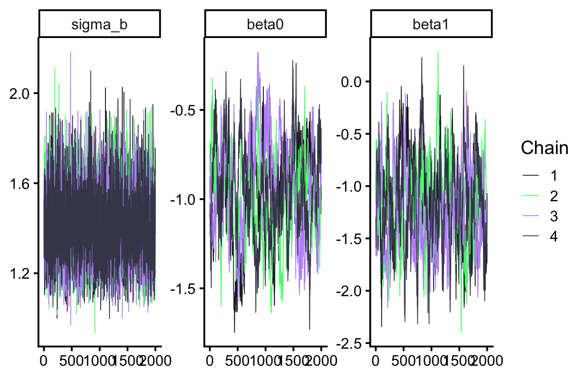
mcmc_scatter(re_nc_samples, pars = c("beta0", "beta1"))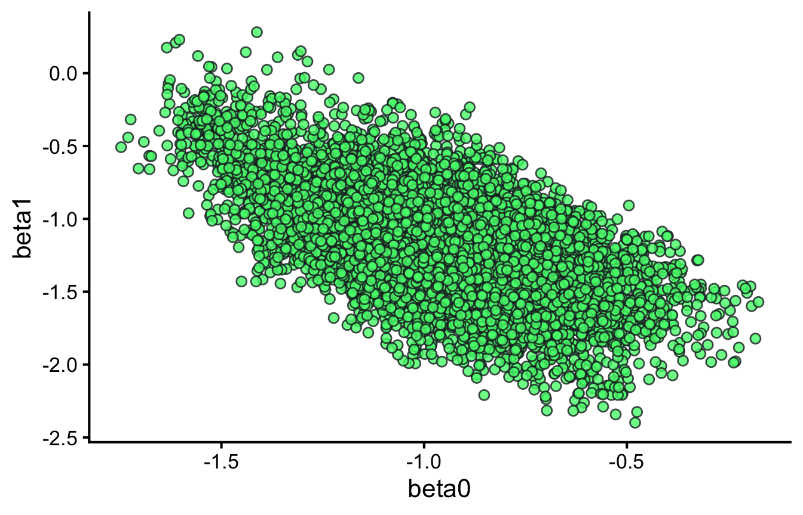
Compare these with the centred model. R-hat should now be at or below about 1.05 for all three, and n.eff for the fixed effects should jump from the tens into the hundreds. The traces should look like fuzzy caterpillars. The posterior still has the same correlated shape — we haven’t changed the model — but the sampler now explores it properly.
It’s worth checking the random effects too, not just the parameters you plan to report:
rhat_all <- MCMCsummary(re_nc_samples)$Rhat
max(rhat_all, na.rm = TRUE) # worst R-hat over every monitored node[1] 1.035. Checking and interpreting the random effects model
Posterior predictive check
Let’s compare the model predictions and parameters to the raw data. In below ‘y’ is the data ‘y_rep’ are predictions calculated from the model.
post_re <- as.matrix(re_nc_samples)
y_rep_re <- post_re[, paste0("y_rep[", 1:re_consts$N, "]")]
ppc_dens_overlay(dat$cover_branching, y_rep_re[1:100, ])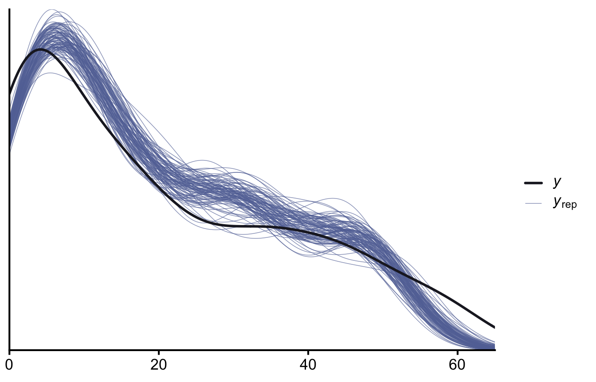
# Does the model reproduce the spread, and the zeros?
ppc_stat(dat$cover_branching, y_rep_re, stat = "sd")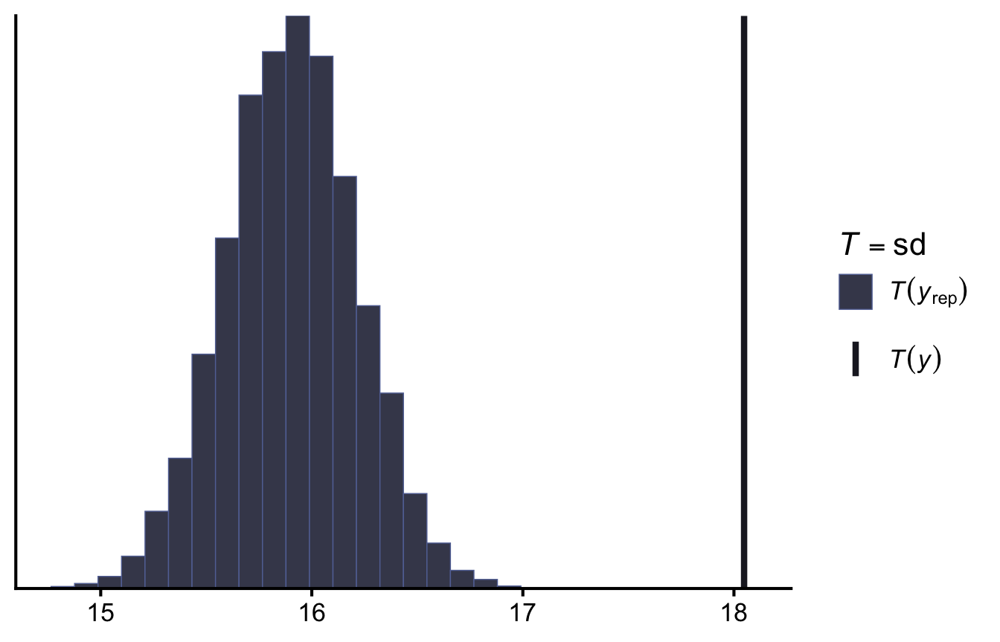
prop_zero <- function(y) mean(y == 0)
ppc_stat(dat$cover_branching, y_rep_re, stat = "prop_zero")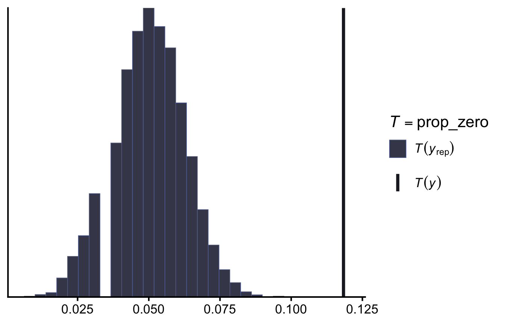
This is a big improvement on the GLM: the site effects soak up most of the reef-to-reef variation, and the density overlay looks broadly right.
Two statistics area still off:
- The SD of the observed transects is about 18, and the replicates average nearer 16. The model is slightly too tight.
- The zeros. 29 of the 245 transects have no branching coral at all. The model predicts about half that many.
Both say the same thing: transects within a site still vary more than a binomial allows. The site effect handles differences between reefs, but not patchiness along a single reef. We come back to this in section 6.
A plot that’s easier for readers to interpret shows each observed transect against its predictive interval, grouped by logging:
ppc_intervals_grouped(dat$cover_branching, y_rep_re,
group = dat$logged) +
labs(x = "Transect", y = "Points on branching coral")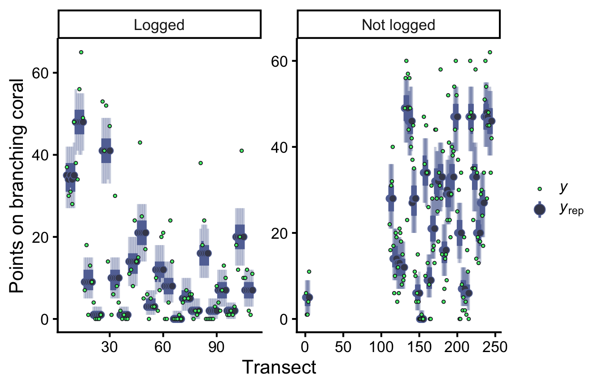
Parameter estimates
# Fixed effects and site SD
mcmc_areas(re_nc_samples, pars = c("beta0", "beta1", "sigma_b"), prob = 0.9)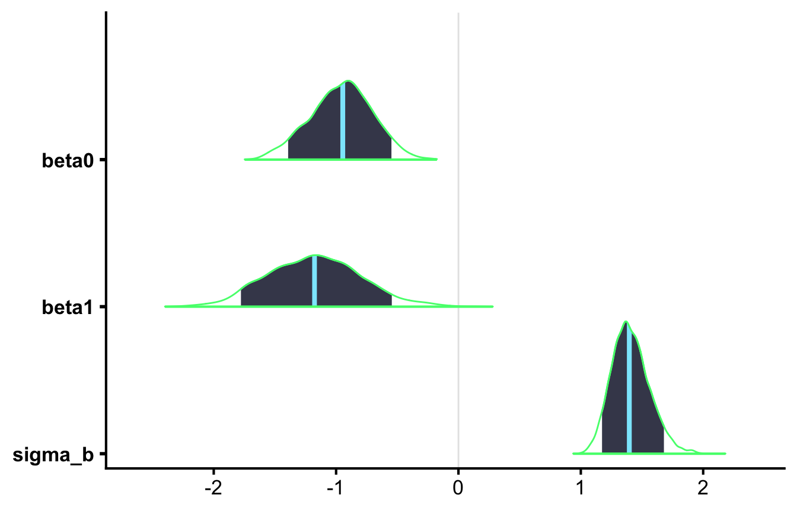
# Logging effect as an odds ratio
mcmc_intervals(re_nc_samples, pars = "odds_ratio")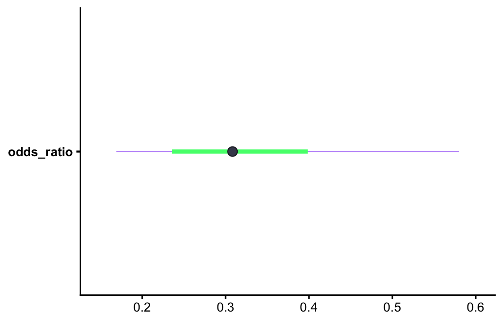
# The two group means, on the scale readers actually care about
mcmc_intervals(re_nc_samples, pars = c("p_unlogged", "p_logged"))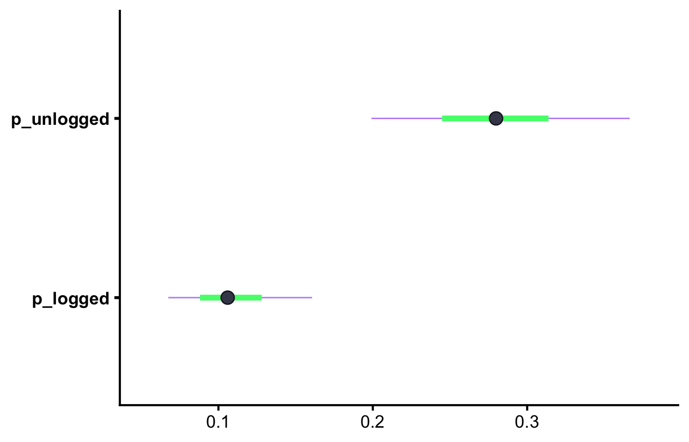
# Site effects: which reefs are above or below average?
mcmc_intervals(re_nc_samples, regex_pars = "^b\\[")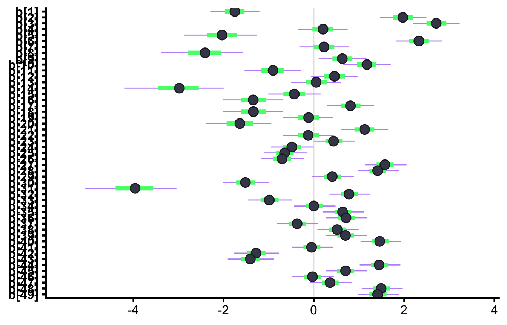
How to read these:
p_unloggedandp_loggedare the headline numbers: cover on a typical reef of each kind, as a proportion. Report these. Everyone can picture “25% cover versus 9%”.- The odds ratio is the effect size. A value of about 0.3 means logging cuts the odds of a point landing on branching coral to roughly a third. If the interval crosses 1, the direction is uncertain.
beta1on the logit scale is the same information in units nobody thinks in. Keep it for the diagnostics, report the other two.- Site effects show shrinkage. Reefs with very little coral are pulled towards the mean instead of running off to minus infinity.
# The direct answer to the question we asked
mean(post_re[, "beta1"] < 0) # posterior probability of less coral when logged[1] 0.998125quantile(post_re[, "p_unlogged"], c(0.025, 0.5, 0.975)) 2.5% 50% 97.5%
0.1860820 0.2798399 0.3821269 quantile(post_re[, "p_logged"], c(0.025, 0.5, 0.975)) 2.5% 50% 97.5%
0.06267197 0.10595971 0.17258201 quantile(post_re[, "pct_change"], c(0.025, 0.5, 0.975)) 2.5% 50% 97.5%
-78.91339 -61.54974 -27.79102 Note what the Bayesian framing buys you: mean(beta1 < 0) is a direct statement of the probability that logged reefs have less branching coral, given the model and data. There is no null hypothesis and no p-value to misread.
Joint posteriors
mcmc_pairs(re_nc_samples, pars = c("beta0", "beta1", "sigma_b"))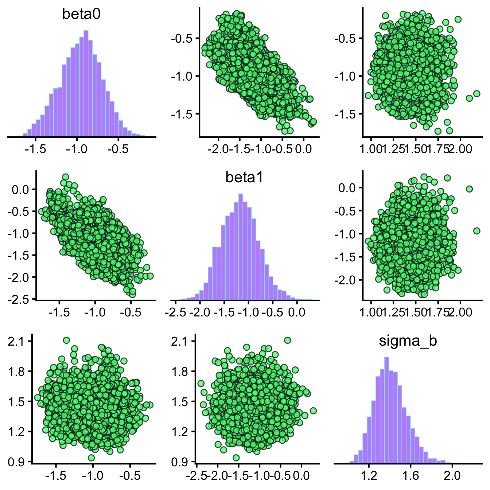
Things to discuss:
- Intercept against contrast.
beta0andbeta1are strongly negatively correlated, and no amount of sampler tuning removes that — it is a property of the posterior, not the algorithm. With a treatment contrast, the intercept is the reference group, so the two parameters are tied together by construction. - A way to decouple them. Fit
beta[1]andbeta[2]as separate group means instead of an intercept and a contrast (sometimes called means parameterisation). The two means are nearly independent, and you recover the contrast afterwards asbeta[2] - beta[1]. Try it and compare the pairs plot. sigma_bagainst the intercept. A mild slope shows that the overall level and the spread between reefs are slightly confounded, which is expected and not a problem at this strength.- Before and after. Run the same pairs plot on
re_samplesto see what the default samplers made of the same geometry.
Publication-quality plots
The odds ratio and the two group means were calculated inside the model, so we just need to get them out of the chains. tidybayes does this tidily: gather_draws() stacks named quantities into long format.
effects <- re_nc_samples |>
gather_draws(odds_ratio)The effect as an odds ratio:
ggplot(effects, aes(x = .value, y = "Logging")) +
stat_halfeye(.width = c(0.66, 0.95), fill = fangs[["accent"]],
colour = fangs[["border"]], slab_alpha = 0.8) +
geom_vline(xintercept = 1, linetype = "dashed", colour = fangs[["orange"]]) +
scale_x_log10() +
labs(x = "Odds ratio for branching coral (logged vs unlogged)", y = NULL)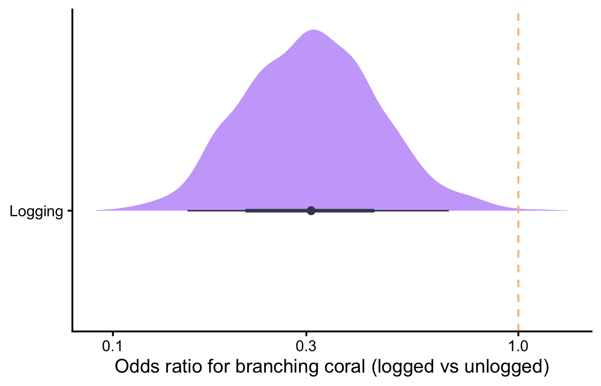
- The x-axis is on a log scale, so doubling (2) and halving (0.5) sit the same distance from 1.
- The thick bar is the 66% interval and the thin bar is the 95% interval.
- If the distribution sits clearly below 1, there is less branching coral on logged reefs, which is the direction the sediment story predicts.
Cover on each kind of reef:
group_means <- re_nc_samples |>
gather_draws(p_unlogged, p_logged) |>
mutate(reef = factor(.variable,
levels = c("p_unlogged", "p_logged"),
labels = c("Not logged", "Logged")))
# Observed transect cover, for context
obs <- dat |>
mutate(pct = 100 * cover_branching / n_points,
reef = factor(logged, levels = c("Not logged", "Logged")))
ggplot(group_means, aes(x = reef, y = 100 * .value)) +
stat_halfeye(.width = c(0.66, 0.95), fill = fangs[["accent"]],
colour = fangs[["border"]], slab_alpha = 0.8,
position = position_nudge(x = 0.1)) +
geom_jitter(data = obs, aes(x = reef, y = pct),
width = 0.06, colour = fangs[["cyan"]], alpha = 0.4,
inherit.aes = FALSE) +
labs(x = NULL, y = "Branching coral cover (%)")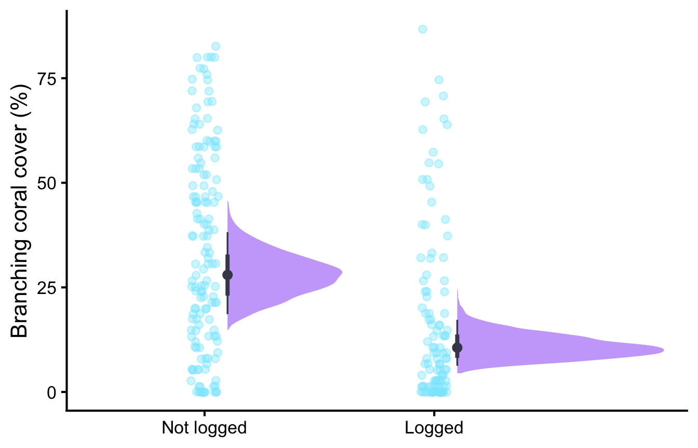
- The halfeye is the posterior for a typical reef, with the site effect set to zero. The blue points are the raw transects.
- The posterior is much narrower than the data. The transects scatter because reefs differ and transects within a reef differ; the posterior is our uncertainty about the average, which many transects pin down well.
- This is the median reef, not the mean reef. The logit link is non-linear, so averaging over the site effects gives a slightly different number than setting them to zero.
TipExtension
Predict for an unsampled reef. Add b_new ~ dnorm(0, sd = sigma_b) to the model block, along with p_new_logged <- ilogit(beta0 + beta1 + b_new). Monitor it and plot it next to p_logged. The distribution will be far wider, because it includes the variation between reefs rather than just our uncertainty about the average. That is the right interval to quote if someone asks what they’d find on a reef you haven’t visited.
6. An observation-level random effect
The SD and zeros checks showed that transects within a site still vary more than a binomial allows. What we can try is give every transect its own small random effect.
olre_code <- nimbleCode({
beta0 ~ dnorm(0, sd = 2)
beta1 ~ dnorm(0, sd = 1)
sigma_b ~ dexp(1.54) # reef-to-reef SD
sigma_e ~ dexp(1.54) # transect-to-transect SD
for (s in 1:Nsite) {
b[s] ~ dnorm(0, sd = sigma_b)
}
for (i in 1:N) {
e[i] ~ dnorm(0, sd = sigma_e)
logit(p[i]) <- beta0 + beta1 * logged[i] + b[site[i]] + e[i]
cover[i] ~ dbin(p[i], npts[i])
# Replicate data: a NEW transect on the same reef
e_new[i] ~ dnorm(0, sd = sigma_e)
logit(p_rep[i]) <- beta0 + beta1 * logged[i] + b[site[i]] + e_new[i]
y_rep[i] ~ dbin(p_rep[i], npts[i])
}
p_unlogged <- ilogit(beta0)
p_logged <- ilogit(beta0 + beta1)
odds_ratio <- exp(beta1)
})e[i]gives each transect its own offset. This turns the binomial into a binomial-logit-normal, which allows extra spread and extra zeros.- There are now two variance components.
sigma_bis how much reefs differ from each other.sigma_eis how much transects on the same reef differ. Comparing them is ecologically meaningful: is coral patchy between reefs or along them? - The prior on
sigma_euses the same “odds multiple of 7, 5% chance” reasoning. Redo the aside’s calculation with your own belief about how much transects on one reef can differ. - Expect slower sampling requiring longer chains. The model now has 245 extra parameters, one per transect. Check the n.eff for
sigma_eespecially, and consider increasingniter. - The replicates use new transect effects,
e_new. See the warning in the posterior predictive check below for why.
olre_model <- nimbleModel(olre_code, constants = re_consts, data = re_data,
inits = list(beta0 = 0, beta1 = 0,
sigma_b = 1, b = rep(0, re_consts$Nsite),
sigma_e = 0.5, e = rep(0, re_consts$N)))
c_olre_model <- compileNimble(olre_model)
# Don't monitor e or e_new: we never look at them directly
olre_conf <- configureMCMC(olre_model,
monitors = c("beta0", "beta1", "sigma_b", "sigma_e",
"b", "y_rep", "p_unlogged", "p_logged",
"odds_ratio"),
print = FALSE)
# Same block sampler as before: the two fixed effects are still correlated
olre_conf$removeSamplers(c("beta0", "beta1"))
olre_conf$addSampler(target = c("beta0", "beta1"), type = "AF_slice")
olre_mcmc <- buildMCMC(olre_conf)
c_olre_mcmc <- compileNimble(olre_mcmc, project = olre_model)
olre_samples <- runMCMC(c_olre_mcmc, nchains = 4, niter = 40000,
nburnin = 20000, thin = 10,
samplesAsCodaMCMC = TRUE)|-------------|-------------|-------------|-------------|
|-------------------------------------------------------||-------------|-------------|-------------|-------------|
|-------------------------------------------------------||-------------|-------------|-------------|-------------|
|-------------------------------------------------------||-------------|-------------|-------------|-------------|
|-------------------------------------------------------|MCMCsummary(olre_samples,
params = c("beta0", "beta1", "sigma_b", "sigma_e"),
round = 2) mean sd 2.5% 50% 97.5% Rhat n.eff
beta0 -1.11 0.27 -1.67 -1.10 -0.63 1.07 152
beta1 -1.24 0.40 -1.97 -1.24 -0.44 1.04 200
sigma_b 1.46 0.18 1.16 1.45 1.85 1.00 2944
sigma_e 0.93 0.06 0.82 0.93 1.06 1.00 2345mcmc_trace(olre_samples, pars = c("sigma_b", "sigma_e"))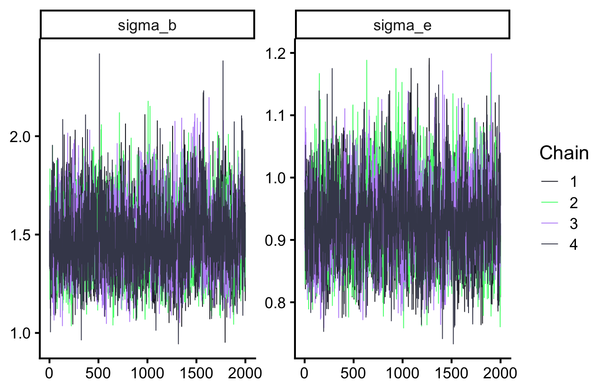
Compare sigma_b and sigma_e. Reef-to-reef variation is the larger of the two, but transect-to-transect variation is substantial too. A model with only site effects was attributing all of that patchiness to the wrong level.
Posterior predictive check
WarningA trap
If the replicates used the fitted transect effects, y_rep[i] ~ dbin(p[i], npts[i]), every transect would already have its own effect tuned to its own observation. The model would then reproduce the observations almost perfectly and the check would tell you nothing. So in the model block we draw a new transect effect, e_new[i], for each replicate. That asks the question: what would another transect on this reef look like?
post_ol <- as.matrix(olre_samples)
y_rep_ol <- post_ol[, paste0("y_rep[", 1:re_consts$N, "]")]
ppc_stat(dat$cover_branching, y_rep_ol, stat = "sd")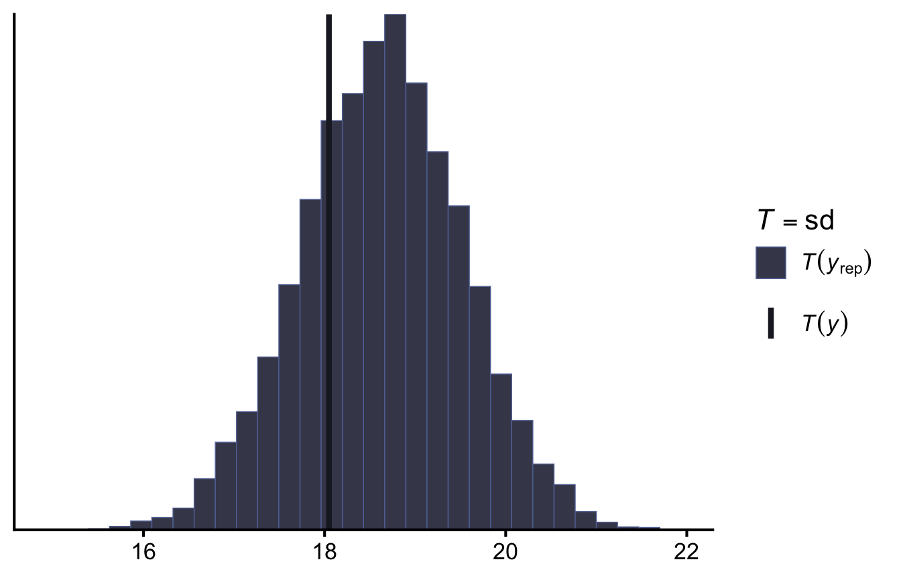
ppc_stat(dat$cover_branching, y_rep_ol, stat = "prop_zero")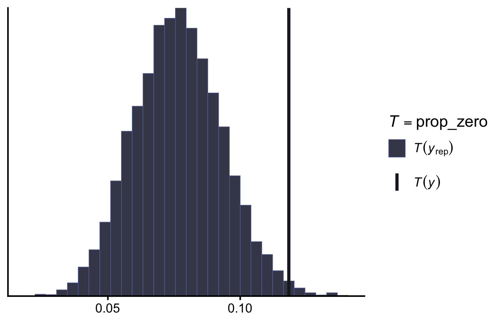
ppc_dens_overlay(dat$cover_branching, y_rep_ol[1:100, ])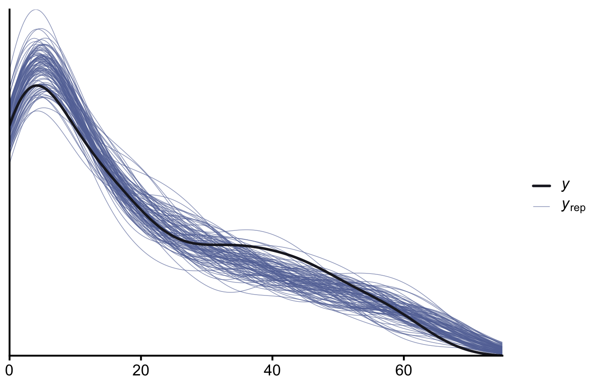
Both statistics the previous model missed are now much better. The replicated SD lands on the observed value, and the zeros are close. The model still under-predicts zeros slightly.
Comparing the two models
bind_rows(
tibble(model = "Site RE only", or = post_re[, "odds_ratio"]),
tibble(model = "Site + transect RE", or = post_ol[, "odds_ratio"])
) |>
ggplot(aes(x = or, y = model)) +
stat_halfeye(.width = c(0.66, 0.95), fill = fangs[["accent"]],
colour = fangs[["border"]], slab_alpha = 0.8) +
geom_vline(xintercept = 1, linetype = "dashed", colour = fangs[["orange"]]) +
scale_x_log10() +
labs(x = "Odds ratio for branching coral (logged vs unlogged)", y = NULL)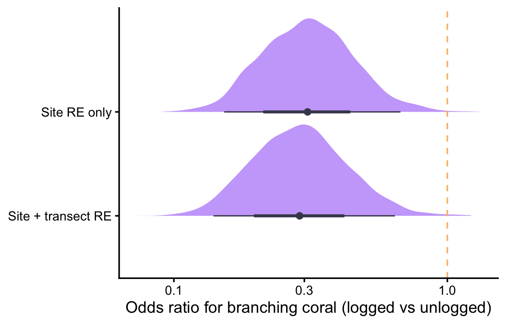
The interval is slightly wider in the second model, and the point estimate shifts a little further from 1. Two lessons:
- Ignoring overdispersion makes you overconfident about the effects you care about. The first model’s interval was too narrow because it pretended transects on a reef were more alike than they are.
- The conclusion is the same either way. The logging effect is strong enough that accounting for the extra variation doesn’t overturn it. That is what you hope to find, and the only way to know is to check.
Wrapping up
Back to the question: is there less branching coral on reefs in logged areas?
mean(post_ol[, "beta1"] < 0) # probability of a negative effect[1] 0.997375round(100 * quantile(post_ol[, "p_unlogged"], c(0.025, 0.5, 0.975)), 1) 2.5% 50% 97.5%
15.9 24.9 34.8 round(100 * quantile(post_ol[, "p_logged"], c(0.025, 0.5, 0.975)), 1) 2.5% 50% 97.5%
5.1 8.5 15.8 round(quantile(post_ol[, "odds_ratio"], c(0.025, 0.5, 0.975)), 2) 2.5% 50% 97.5%
0.14 0.29 0.64 Yes. A typical unlogged reef has about 25% branching coral cover (95% CI 17–37%) and a typical logged reef about 9% (95% CI 5–15%). The odds ratio is 0.29, so logging is associated with roughly a third of the odds of a point landing on branching coral, and the posterior probability of a negative effect is essentially 1.
A beta-binomial likelihood is another common way to handle overdispersion. If you are working with these types of problems commonly you might want to look into it. We used the observation-level random effect because it extends simply on the work we’ve already done. Either method is valid, you just need to confirm the diagnostics as we have done.
What to take away
- Match the likelihood to the data-generating process. Points out of a total is a binomial.
- Check the prior on the scale you can picture, not the scale the model works on. A “flat” logit prior is not flat in cover.
- Diagnose before you interpret. We checked the chains, Rhats, ESS and other statistics and plots to make sure our algorithm was fitting well and then followed up with comparisons of the predictions to the data.
- Bayesian workflows. We used prior predictive checks to confirm our priors were sensible, diagnoses to confirm our algorithm worked well (and fix problems that arose), posterior predictive checks to confirm the fit of model to the data.
References
Hamilton, R.J., Almany, G.R., Brown, C.J., Pita, J., Peterson, N.A. & Choat, J.H. (2017) Logging degrades nursery habitat for an iconic coral reef fish. Biological Conservation 210: 273–280.
McElreath, R. (2020) Statistical Rethinking: A Bayesian Course with Examples in R and Stan. 2nd edition. CRC Press.